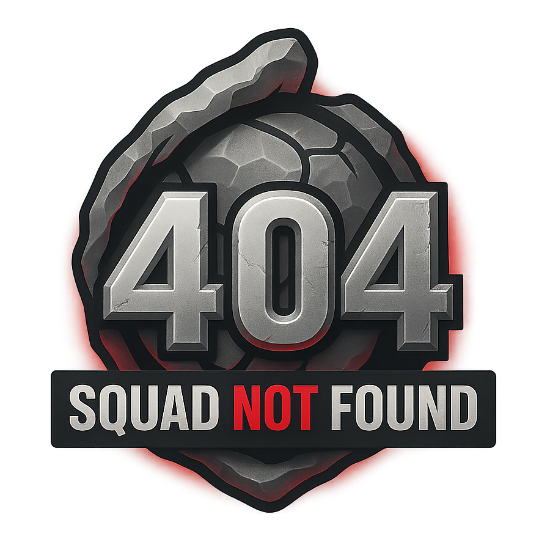

Initial documentation live
The first version of the Antares documentation is now available.
Welcome to the official documentation for Antares - a Discord bot built exclusively around Warframe.
Use the sidebar to explore commands, guides, and more.
Antares is a Warframe-focused Discord bot designed to help alliance and clan.
Made by -AoD-justTrek and -AoD-choobie.

It currently lives on a public Warframe alliance server "404 Squad Not Found" and provides tools tailored to the game....
A Not yet. Antares commands are currently available on a public Warframe alliance server, with some commands also available in the bot's DMs.
A Yes. Antares is built exclusively for Warframe-related features.
A Not everything updates automatically. It's recommended to manually update your inventory in the bot from time to time.
Automatic updates depend on what's available through the Alecaframe public token. Currently, this includes owned/opened relics and trade history.
If data isn't available through the public token, it cannot be automatically updated. In that case, Antares uses a snapshot of your last submitted lastdata.dat file.
Your basic help command. Has an optional argument to show a specific help message.
Auto-generated list of all available commands, their descriptions, required and optional arguments.
Look up relics by part, set, resurgence, or ducats.
...
Shows the price history of an item.
...
Sends your inventory to the bot.
...
Change your settings related to inventory.
...
Remove your inventory from the bot.
...
Shows a leaderboard for a specific item.
...
Shows a leaderboard for a specific prime set.
...
Shows a leaderboard for a specific category.
...
Shows current Elite Deep Archimedea rotation.
...
Shows current Elite Temporal Archimedea rotation.
...
Shows stats depending on what you pick, each category option has a unique view. Your stats by default but you can also select specific user.
...
How to send your inventory to the bot?
...
How to update your inventory in the bot?
...
See "Does my sent inventory automatically update?" in the FAQ.
What it is and how to start using the bot's sniper feature.
...
Any major changes, fixes, updates, new features will be put here.
The first version of the Antares documentation is now available.
Antares uses various community tools and resources and I am grateful for their work.
...